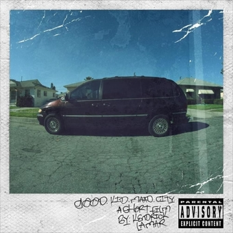

good kid, m.a.a.d city
THE LIFE & TIMES OF COMPTON, CA.
THE STORIES ARE REAL, THE FEELINGS ARE TRUE & THE LESSONS STILL RESONATE.
THE PULSE OF THIS ALBUM LIVES IN THE BEGINNING HALF OF THE ART OF PRESSURE.
CHORDS THAT MOVED ME. CHORDS THAT INSPIRED MOST OF THE LYRICS WRITTEN. I HOPE THOSE SAME CHORDS INSPIRE YOU AS WELL.
